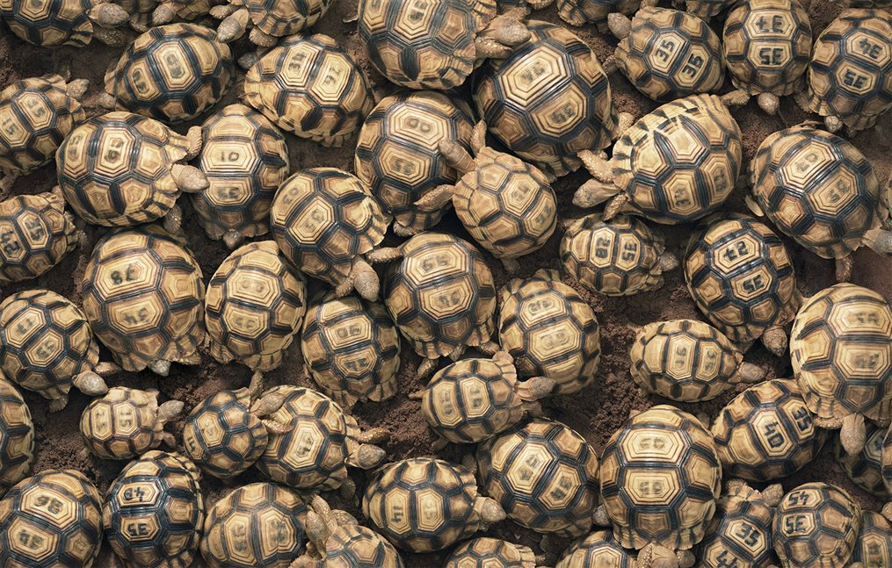
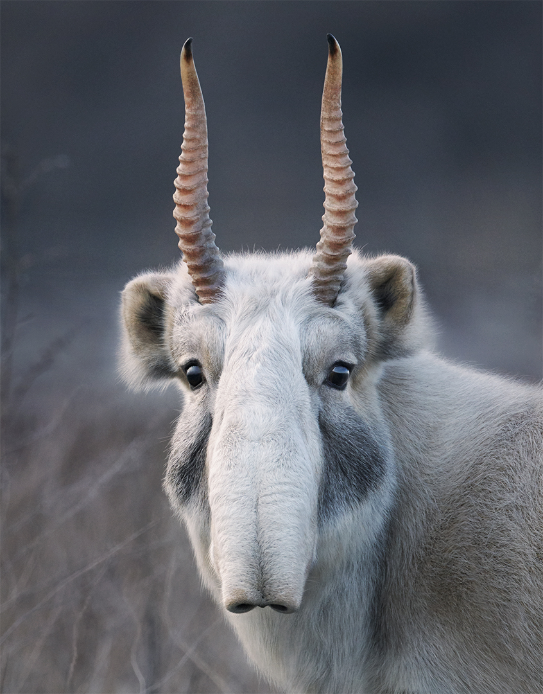

Este especie de felinos vive en las montañas con más de 3.000 metros de altitud de Asia Central, como las del Himalaya. Esta montaña es un ecosistema vulnerable al cambio climático y todas las especies que habitan allí sufren graves consecuencias que contribuyen a la disminución de ejemplares de diferentes especies, algo que ha hecho que los leopardos de las nieves tengan que acercarse al ganado de los poblados más cercanos a alimentarse por no tener otras presas que cazar. Solo 4.000 ejemplares del leopardo de las nieves se encuentran en libertad, según la organización WWF. Datos que hacen que esta especie se encuentre en La Lista Roja de la Unión Internacional para la Conservación de la Naturaleza (UICN). Cabe destacar que, cada año mueren entre 220 y 450 ejemplares por la caza furtiva, cuatro ejemplares por semana.
JAGUAR
Habita en la región selvática de Colombia, se extiende desdé el Sur de Estados Unidos hasta el Norte de Argentina, prefiere las selvas con ríos y caños. Sus principales amenazas son: El comercio ilegal de la piel y de las crías, la cacería deportiva, el control de depredadores y la sobreexplotación de sus presas. También, la pérdida de hábitat por deforestación de zonas boscosas con fines forestales y mineros o para su transformación en áreas agrícolas y ganaderas.
CÓNDOR
Se encuentra a lo largo de la Cordillera de los Andes, y en Colombia se puede encontrar específicamente en los nevados. Es el ave más grande y de mayor anchura de los Andes. Realiza su vuelo a mayor altura que las demás aves. El Cóndor es un ave grande monógama, es decir que tiene una sola pareja durante toda su vida. Sus principales amenazas son: la extinción de los grandes mamíferos latinoamericanos y la reducción de especies como venados y dantas han contribuido en la disminución de las poblaciones de estos depredadores, puesto que se alimentan de carroña(animales muertos). Adicionalmente, desde el período de conquista ha estado afectado por la cacería e incluso la caza deportiva.
MANATÍ
Conocido como manatí de Las Antillas, tiene una población cada día más escasa. Es una especie declarada como vulnerable. Tiene un ciclo muy lento de reproducción. Es un animal acuático que se alimenta de vegetación. Los manatíes han sido cazados comunmente por su grasa y su carne, aunque hace años que la especie ha sido protegida, por lo que la caza no es el factor más acuciante en la actualidad. La pérdida de hábitat es ahora mismo su principal amenaza.
OSO POLAR
Los osos polares dependen del hielo marino para atrapar su presa. Se abalanzan sobre las focas cuando emergen a través de sus respiraderos y las acechan mientras toman el sol al aire libre, pero el hielo se está derritiendo a medida que nuestro clima se calienta ada día. En los trece inviernos que siguen al año 2003 se produjeron las trece extensiones de hielo más pequeñas registradas por los satélites. Las temporadas de caza son cada vez más cortas, y por cada semana de hielo de nuestros mares que se pierde en los inviernos del Ártico, los osos polares pierden alrededor 7 kg de grasa.
DINOSAURIOS-CRETÁCICO
Numerosos fósiles de huesos, dientes, huellas y otras pruebas sólidas han revelado que la Tierra fue el terreno de los dinosaurios durante al menos 230 millones de años. Pero hasta ahora no se ha hallado ni un solo resto de dinosaurio en rocas de antigüedad inferior a 66 millones de años. En ese momento, cuando el Cretácico daba paso al Paleógeno, parece que los dinosaurios hubiesen dejaron de existir súbitamente.También siguieron ese camino algunos reptiles marinos temibles como el mosasaurio, el ictiosaurio y el plesiosaurio, así como los reptiles voladores denominados pterosaurios. Los bosques antiguos parecen haberse incendiado en gran parte del planeta. Y aunque algunos mamíferos, aves, reptiles pequeños, peces y anfibios sobrevivieron, la diversidad de las formas de vida restantes se desplomó de forma precipitada. En total, esta extinción masiva se cobró tres cuartos de la vida en la Tierra.
ANGELES DE MAR
Conoce al ángel del mar, un pequeño y translúcido eslabón en una cadena alimenticia cuyo colapso podría tener graves consecuencias. Con no más de 2 de 5 centímetros de largo, los ángeles marinos son moluscos emparentados con las babosas y los caracoles. Sus “alas” se conocen como parapodios: extensiones especializadas de los pies, que baten para desplazarse a través del agua. Los ángeles marinos se aprovechan de otro grupo de moluscos marinos, las mariposas marinas, que también cuentan con este tipo de adaptación. No obstante, a su vez, los ángeles del mar son una fuente de alimento vital para las ballenas, aves marinas y otras muchas especies. Mientras un ángel marino se deshace de su caparazón poco después de eclosionar del huevo, las mariposas marinas retienen las suyas, y este es el problema. Su cubierta es muy delgada y se disuelve fácilmente al aumentar la acidificación del océano.
MANDRIL
El mandril es una especie de primate catarrino de la familia Cercopithecidae. Está emparentado con los babuinos y más estrechamente con el dril. El mandril y el dril se clasificaron en el pasado dentro del género Papio, pero investigaciones posteriores llevaron a separarlos en un género propio, Mandrillus.Los mandriles viven en grandes manadas, llegando a registrarse casi 1300 especies en una misma zona, son muy llamativos por sus tonos en el pelaje y el rostro los cuales indican su estado social y sexual, lamentablemente su carne es considerada un majar en el oeste de áfrica, además de que claro está la venta de sus pieles, y ya que habitan en grandes manadas el cazarlos es muy fácil, siendo unas presas muy fáciles de atrapar.
LÉMUR RUFO BLANCO Y NEGRO DEL ESTE DE MADAGASCAR
Los lémures son unos primates estrepsirrinos endémicos de la isla de Madagascar. Reciben su nombre por los lemures, fantasmas o espíritus de la mitología romana, debido a las estrepitosas vocalizaciones que emiten, sus ojos brillantes y los hábitos nocturnos de algunas de sus especies. Poseen una de las voces más fuertes de todo el reino animal, pero cada vez sus gritos se oyen con mayor frecuencia y menor intensidad gracias a la caza, ya que son fáciles de cazar, todo con el objetivo de conseguir su carne, además de la caza indiscriminada está el hecho de que si no se hacen cambios, el habitad de esta especie habrá desaparecido en su totalidad para el 2080, y no pasara mucha hasta que haya desaparecido por completo esta especie

TORTUGA ANGONOKA
La tortuga angonoka es una tortuga criptodira de la familia Testudinidae endémica del noreste de Madagascar, es una de las más raras del mundo por su forma y está en grave peligro de extinción. Es una de las tortugas más raras y que más lento crece, llegando a tardar 15 años en llegar a ser una cría, el hecho de que crezcan tan lento hace de que un solo huevo robado sea extremadamente valioso pero a su vez ser aplastante para la especie y acercarlos cada vez más a su fin, la especie ya había sido declarada extinta, pero en 1998 fue redescubierta y en la misma zona donde fue hallada (Madagascar) se creó un parque para proteger esta especie hasta que alcanzara la edad para ser dejada en libertad.
PANGOLÍN
Los folidotos forman un orden de mamíferos placentarios, conocidos popularmente como pangolines. El orden contiene ocho especies vivas, todas pertenecientes al género Manis, uno de los cuatro que forman la familia de los mánidos. Esta especie fue comercializada ilegalmente de 2007 a l 2017, son una presa fácil para los cazadores ya que son tímidos, sin dientes, en su mayoría nocturnos, y se quedan inmóviles cuando tienen miedo. Envueltos por una armadura de escamas de queratina, esta defensa los protege de sus depredadores históricos, pero los humanos simplemente pueden recogerlos y llevárselos. Los pangolines poseen una herencia evolutiva única, habiéndose separado de otros mamíferos mientras los dinosaurios todavía caminaban la tierra. Hay cuatro especies en África y cuatro en Asia; todos son ahora vulnerables a la extinción y dos están en peligro crítico.
OSO PANDA
El panda, oso panda o panda gigante es una especie de mamífero del orden de los carnívoros. En la década de 1980, el gobierno chino lanzó una de las campañas de conservación más grandes y caras de la historia para salvar al panda gigante. Se prohibió la caza furtiva, se protegieron los bosques y se logró el reconocimiento internacional de la difícil situación del panda. El esfuerzo eventualmente llevó a un aumento en la población silvestre del panda gigante, y en 2016, la especie fue finalmente clasificada como vulnerable. Muchos grupos se mostraron jubilosos y vieron la reclasificación como un triunfo del trabajo duro y la acción del gobierno; sin embargo a otros les preocupaba que esta nueva clasificación resultara engañosa, y pudiera disminuir la financiación e investigación.
MARIPOSAS MONARCA
La mariposa monarca es una especie de lepidóptero ditrisio de la familia Nymphalidae, superfamilia Papilionoidea. Es quizás la más conocida de todas las mariposas de América del Norte. Desde el siglo XIX ha sido introducida en Nueva Zelanda y en Australia. Las mariposas monarca se alimentan de algodoncillo, una planta tóxica que las hace venenosas ante posibles depredadores. Sin embargo los herbicidas están destruyendo millones de hectáreas de esta fuente de alimento esencial para las mariposas cada año. Estos inmensos y majestuosos enjambres están compuestos por individuos frágiles, que se enfrentan un entorno cambiante y un futuro profundamente incierto. Cada invierno, cientos de millones de insectos realizan un viaje de varios miles de kilómetros, a pesar de que cada uno pesa menos que un billete de euro.
GUACAMAYOS MILITARES
Ara militaris, el guacamayo militar, también conocido como guacamayo verde o papagayo verde, es una especie del género Ara, de la familia de los loros cuyas poblaciones se extienden desde México hasta el norte de Argentina. Los guacamayos militares tienen algunas de las voces más fuertes de los bosques de Sudamérica. No conocen sus llamadas de forma innata, sino que las aprenden de sus padres y compañeros, lo que da lugar a dialectos locales que distinguen a un grupo de otro. En la naturaleza, los guacamayos militares permanecen monógamos de por vida, y como mascotas son aves excepcionalmente leales. Su belleza y buena compañía los pone en gran demanda de la industria de mascotas, pero muchos comerciantes los toman de la naturaleza, en lugar de criarlos en cautiverio.

ANTÍLOPE SAIGA
Los antílopes Saiga son supervivientes de las glaciaciones que han compartido el mundo con mamuts lanudos y tigres dientes de sable. Sus extrañas narices han evolucionado para calentar el aire frío del invierno, pero también para expulsar el polvo levantado de las llanuras en verano. Pueden anticipar el clima, desarrollar sus pelajes a modo de abrigo y emigrar al sur justo antes de que llegue la nieve. Los saigas son cazados furtivamente por sus cuernos retorcidos, que se venden en el este de Asia como analgésicos y antidepresivos, por lo que en poco tiempo podrían no quedar suficientes machos como para sacar a esta especie del peligro que se cierne sobre ella.
GRULLAS DE CORONILLA ROJA
Las grullas de coronilla roja o grullas de Manchuria del noreste de Asia son muy conocidas por sus gráciles danzas de cortejo: arquean el cuello y luego saltan al aire, volviendo a posarse en el suelo con un golpe de alas para caer de puntillas alrededor de su compañero. Cazados por su espléndido plumaje, la población residente de la isla japonesa de Hokkaido cayó tan solo a treinta individuos durante la década de 1920, pero los agricultores locales intervinieron para salvarlos, y todavía los alimentan todas las mañanas hasta el día de hoy. En el continente, las grullas de Manchuria todavía están en declive. El 92% de su hábitat en China se ha perdido en los últimos 30 años, y el que poco que queda está rodeado de ciudades, granjas y campos petroleros.
EL LINCE IBÉRICO
El lince ibérico es una especie de mamífero carnívoro de la familia Felidae, endémico de la península ibérica. Una de las especies más amenazadas alrededor del mundo es el lince ibérico, pese a que día a día se lucha para mantener la supervivencia de esta especie, los esfuerzos de algunas organizaciones no han sido suficiente, El principal motivo por el cual esta especie se encuentra en peligro de extinción es la caza masiva que se llevó a cabo en el siglo XX , además de esto está que en el presente hay falta de alimento, aparición de nuevos virus que atentan contra estas especies, y principalmente la destrucción de sus habitads naturales.
TIBURON BLANCO
El gran tiburón blanco es una especie de pez cartilaginoso lamniforme de la familia Lamnidae. Vive en las aguas cálidas y templadas de casi todos los océanos. Esta especie es la única del género Carcharodon que sobrevive en la actualidad. A nivel mundial se considera Vulnerable. El Tiburón Blanco o Gran Tiburón Blanco es la única especie de tiburón del género Carcharodon que está vivo actualmente. Actualmente se encuentra en estado Vulnerable de Peligro de Extinción, este animal es cazado para vender sus aletas en el marcado negro y es dejar el animal vivo solo para que se desangre sin poder hacer algo más, además que claro queda expuesto a otros depredadores.
ATUN ROJO
El atún rojo, atún común o atún rojo del Atlántico; conocido también en Cantabria y País Vasco como cimarrón, es una especie de atún perteneciente a la familia de los Scombridae. A aquellos individuos que superan los 150 kilogramos, se le conoce como atún rojo gigante. Es una especie marina que se encuentra en peligro crítico, perteneciendo a la familia Scombridae, la razón por la que se encuentra amenazada es por la sobrepesca, pese a que este animal se encuentra en la cima de la cadena alimenticia y el descenso de la población de especie puede afectar el ecosistema ya que aumentara en exceso la población de otros animales que antes eran regulados por el atún rojo.
RANA VENENOSA DORADA
Tiene uno de los venenos más peligrosos que con tan solo una gota puede matar a 10.000 ratones o diez hombres adultos. Se alimenta de insectos a pesar de que su tamaño no supera los cinco centímetros y tiene solo un depredador natural. Habita en una parte de la selva del Pacifico colombiano y debido a la mineria ilegal y la tala de arboles, se ha clasificado como una espcie en via de extinción
AJOLOTE
El ajolote del náhuatl āxōlōtl es una especie de anfibio caudado de la familia Ambystomatidae. Es endémico del sistema lacustre de la Cuenca de México y ha tenido una gran influencia en la cultura mexicana. Los jolotes son neoténicos, los que significa llegan a la madurez sexual siendo apenas larvas, desarrollan sus agallas y cola, pero el hecho de que se desarrollen tan rápido hace que físicamente no se desarrollen completamente, especial mente el sistema inmune el cual es muy débil, y gracias a la contaminación en el océano estos no sobreviven, y as pocas zonas donde todavía habitan están siendo constante mente amenazadas por grande industrias para librarse de los desechos que producen